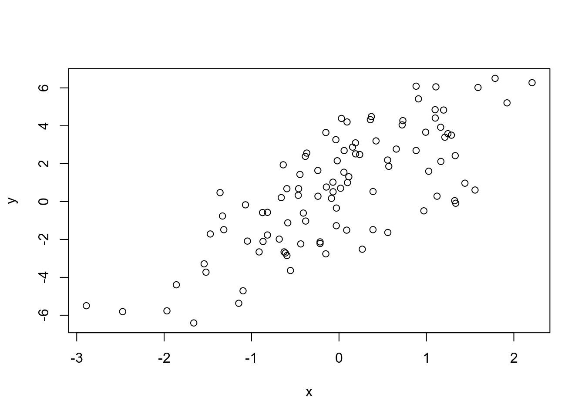
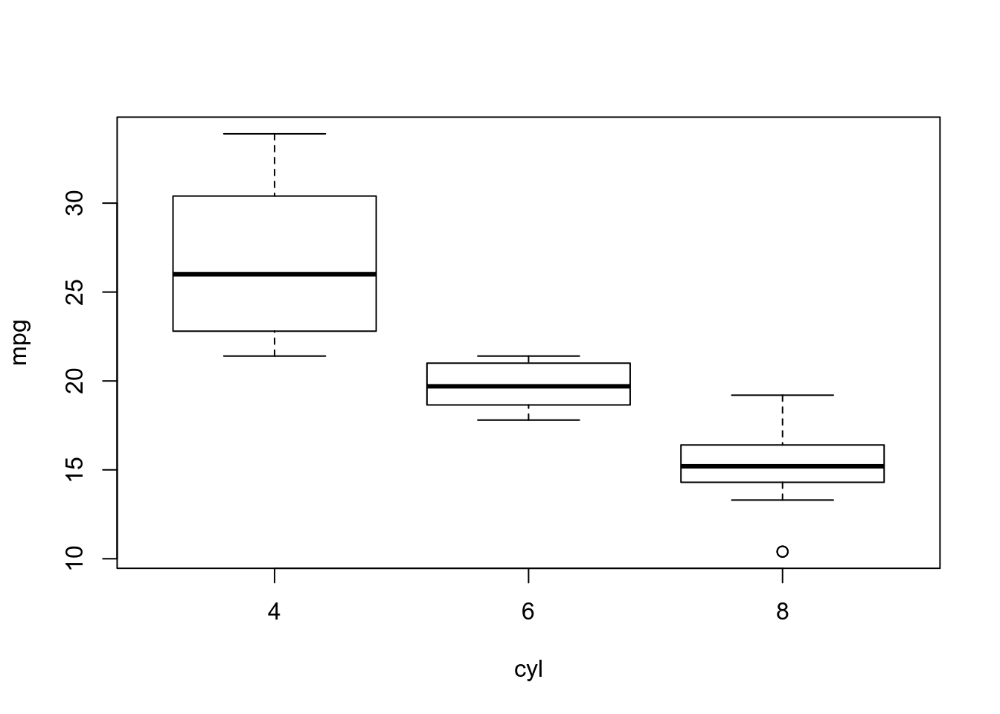

R Programming - Module 4
- 1 The
str()function, the alternative tosummary(). - 2 Simulation.
- 2.1 Importance of randomness.
- 2.2 Built-in functions for simulating
randomness:
r,d,pandqfunctions. - 2.3 Setting the random number seed:
set.seed(). - 2.4 Simulating from a Linear Model.
- 2.5 Simulating from a generalized linear model (where errors are not longer from a Normal distribution).
- 2.6 Random Sampling:
sample()function.
- 3 Profiling R Code.
- 4 Base graphics in R.
- 5 Session Info.
1 The str()
function, the alternative to summary().
Some think that str() is the most important
function in all R.
The idea behind str is that it compactly display
the internal structure of an R object.
- It makes a very simple diagnostic task and it’s very
versatile.
- It’s particularly well suited for compactly displaying large
lists which may contain nested lists.
- It’s goal is to produce roughly one line of output
per basic object.
- For example if we give to it a simple object like a
vector (numeric, factor, etc) or a
matrix, it’ll give us one line of output back,
specifying:
- What kind of R object is it (the class).
- The dimensions of the object, the length of each dimension.
- A sample of the data stored in the object.
- What kind of R object is it (the class).
- If we give to it a function (which is also an
object in R), it will retun again one line back with the arguments of
the function.
- If we give to it a data frame, it will return as
many output lines as there are variables (columns) in the data
frame.
- And, as we said,
stris the best thing that we could ever find to inspect a list.
- For example if we give to it a simple object like a
vector (numeric, factor, etc) or a
matrix, it’ll give us one line of output back,
specifying:
If we want to look at an object, and know what is it, and
what’s in it, we can use str as an
alternative to summary.
Let’s apply str to itself:
str(str)
function (object, ...) - We can see that it’s a function that takes an object, any R
object, so we can apply
strto other functions.
Some examples.
# Inspecting a function.
str(lm)
List of 2
$ a: int [1:2, 1:2] 1 2 3 4
$ b: int [1:3, 1:2] 1 2 3 4 5 6
# A numeric vector (100 random normal variables, mean 2, sd 4)
x <- rnorm(100, 2, 4)
str(x)
num [1:100] -1.12 8.97 1.69 -1.9 2.28 ...
summary(x)
Min. 1st Qu. Median Mean 3rd Qu. Max.
-8.384 -1.877 1.851 1.764 5.275 10.085
# A factor vector.
f <- gl(40, 5)
str(f)
Factor w/ 40 levels "1","2","3","4",..: 1 1 1 1 1 2 2 2 2 2 ...
summary(f)
1 2 3 4 5 6 7 8 9 10 11 12 13 14 15 16 17 18 19 20 21 22 23 24 25 26
5 5 5 5 5 5 5 5 5 5 5 5 5 5 5 5 5 5 5 5 5 5 5 5 5 5
27 28 29 30 31 32 33 34 35 36 37 38 39 40
5 5 5 5 5 5 5 5 5 5 5 5 5 5
# A data frame.
str(airquality)
'data.frame': 153 obs. of 6 variables:
$ Ozone : int 41 36 12 18 NA 28 23 19 8 NA ...
$ Solar.R: int 190 118 149 313 NA NA 299 99 19 194 ...
$ Wind : num 7.4 8 12.6 11.5 14.3 14.9 8.6 13.8 20.1 8.6 ...
$ Temp : int 67 72 74 62 56 66 65 59 61 69 ...
$ Month : int 5 5 5 5 5 5 5 5 5 5 ...
$ Day : int 1 2 3 4 5 6 7 8 9 10 ...
# A matrix.
m <- matrix(x, 10, 10)
str(m)
num [1:10, 1:10] -1.12 8.97 1.69 -1.9 2.28 ...
# A list (of data frames).
lst <- split(airquality, airquality$Month)
str(lst)
List of 5
$ 5:'data.frame': 31 obs. of 6 variables:
..$ Ozone : int [1:31] 41 36 12 18 NA 28 23 19 8 NA ...
..$ Solar.R: int [1:31] 190 118 149 313 NA NA 299 99 19 194 ...
..$ Wind : num [1:31] 7.4 8 12.6 11.5 14.3 14.9 8.6 13.8 20.1 8.6 ...
..$ Temp : int [1:31] 67 72 74 62 56 66 65 59 61 69 ...
..$ Month : int [1:31] 5 5 5 5 5 5 5 5 5 5 ...
..$ Day : int [1:31] 1 2 3 4 5 6 7 8 9 10 ...
$ 6:'data.frame': 30 obs. of 6 variables:
..$ Ozone : int [1:30] NA NA NA NA NA NA 29 NA 71 39 ...
..$ Solar.R: int [1:30] 286 287 242 186 220 264 127 273 291 323 ...
..$ Wind : num [1:30] 8.6 9.7 16.1 9.2 8.6 14.3 9.7 6.9 13.8 11.5 ...
..$ Temp : int [1:30] 78 74 67 84 85 79 82 87 90 87 ...
..$ Month : int [1:30] 6 6 6 6 6 6 6 6 6 6 ...
..$ Day : int [1:30] 1 2 3 4 5 6 7 8 9 10 ...
$ 7:'data.frame': 31 obs. of 6 variables:
..$ Ozone : int [1:31] 135 49 32 NA 64 40 77 97 97 85 ...
..$ Solar.R: int [1:31] 269 248 236 101 175 314 276 267 272 175 ...
..$ Wind : num [1:31] 4.1 9.2 9.2 10.9 4.6 10.9 5.1 6.3 5.7 7.4 ...
..$ Temp : int [1:31] 84 85 81 84 83 83 88 92 92 89 ...
..$ Month : int [1:31] 7 7 7 7 7 7 7 7 7 7 ...
..$ Day : int [1:31] 1 2 3 4 5 6 7 8 9 10 ...
$ 8:'data.frame': 31 obs. of 6 variables:
..$ Ozone : int [1:31] 39 9 16 78 35 66 122 89 110 NA ...
..$ Solar.R: int [1:31] 83 24 77 NA NA NA 255 229 207 222 ...
..$ Wind : num [1:31] 6.9 13.8 7.4 6.9 7.4 4.6 4 10.3 8 8.6 ...
..$ Temp : int [1:31] 81 81 82 86 85 87 89 90 90 92 ...
..$ Month : int [1:31] 8 8 8 8 8 8 8 8 8 8 ...
..$ Day : int [1:31] 1 2 3 4 5 6 7 8 9 10 ...
$ 9:'data.frame': 30 obs. of 6 variables:
..$ Ozone : int [1:30] 96 78 73 91 47 32 20 23 21 24 ...
..$ Solar.R: int [1:30] 167 197 183 189 95 92 252 220 230 259 ...
..$ Wind : num [1:30] 6.9 5.1 2.8 4.6 7.4 15.5 10.9 10.3 10.9 9.7 ...
..$ Temp : int [1:30] 91 92 93 93 87 84 80 78 75 73 ...
..$ Month : int [1:30] 9 9 9 9 9 9 9 9 9 9 ...
..$ Day : int [1:30] 1 2 3 4 5 6 7 8 9 10 ...2 Simulation.
2.1 Importance of randomness.
Randomness is a basic assumption of the great majority of statistical studies.
For example, sometimes we’ll need to introduce randomness to implement statistical procedures like Markov chain Monte Carlo, the bootstrap, random forest, bagging, etc.
Sometimes, we’ll want to simulate a system and random number generators can be used to model random inputs.
2.2 Built-in functions
for simulating randomness: r, d,
p and q functions.
For each probability distribution (Normal, Binomial,
Poisson, etc.) there are tipically four functions
available that start with an r, d,
p and q:
rfor random number generation.- This is the only one that actually simulates random numbers
from a distribution.
- More precisely, it generates random values or observations of a variable having the specified distribution.
- This is the only one that actually simulates random numbers
from a distribution.
dfor density, the density function.- Only for discrete distributions (like Binomial), because it calculates the density at a point.
pfor probability, the cumulative distribution function.qfor quantile, the quantile function (the inverse of cumulative distribution).
If we are only interested in simulating random
numbers, then we will likely only need the r
functions and not the others.
But if we intend to simulate from arbitrary probability distributions using something like rejection sampling, then we’ll need the other functions too.
2.2.1 Table of probability distributions handled by R.
| Distribution | Functions |
|---|---|
| Beta | pbeta qbeta dbeta rbeta |
| Binomial | pbinom qbinom dbinom rbinom |
| Cauchy | pcauchy qcauchy dcauchy rcauchy |
| Chi-Square | pchisq qchisq dchisq rchisq |
| Exponential | pexp qexp dexp rexp |
| F | pf qf df rf |
| Gamma | pgamma qgamma dgamma rgamma |
| Geometric | pgeom qgeom dgeom rgeom |
| Hypergeometric | phyper qhyper dhyper rhyper |
| Logistic | plogis qlogis dlogis rlogis |
| Log Normal | plnorm qlnorm dlnorm rlnorm |
| Negative Binomial | pnbinom qnbinom dnbinom rnbinom |
| Normal | pnorm qnorm dnorm rnorm |
| Poisson | ppois qpois dpois rpois |
| Student t | pt qt dt rt |
| Studentized Range | ptukey qtukey dtukey rtukey |
| Uniform | punif qunif dunif runif |
| Weibull | pweibull qweibull dweibull rweibull |
| Wilcoxon Rank Sum Statistic | pwilcox qwilcox dwilcox rwilcox |
| Wilcoxon Signed Rank Statistic | psignrank qsignrank dsignrank rsignrank |
2.2.2 Simulating from the
Normal distribution: rnorm, dnorm,
pnorm, qnorm.
Probably the most common probability distribution to work with is the Normal distribution.
So let’s take a look at the four functions available to simulate randomness from this kind of distribution.
rnormgenerates random Normal variates (values or observations of a Normal random variable) with a given mean and standard deviation.- It’s
ninput is the number of observations. - By default, it simulates a Standard Normal distribution (mean 0, sd 1).
- It’s
str(rnorm)
function (n, mean = 0, sd = 1)
# Simulate Standard Normal random numbers.
x <- rnorm(10)
x
[1] 0.96129056 0.29382666 0.08099936 0.18366184 0.16625504 -1.26959907
[7] 2.34949332 -1.41200541 -0.01696149 -0.54431935
summary(x)
Min. 1st Qu. Median Mean 3rd Qu. Max.
-1.41201 -0.41248 0.12363 0.07926 0.26629 2.34949
# Simulate Normal random numbers with mean 20 and sd 2.
x <- rnorm(10, 20, 2)
x
[1] 23.60022 22.02288 18.87257 20.41084 22.33092 24.47265 20.60453 17.91499
[9] 18.03292 24.01144
summary(x)
Min. 1st Qu. Median Mean 3rd Qu. Max.
17.91 19.26 21.31 21.23 23.28 24.47 dnorm: evaluates the Normal probability density (with a given mean and standard deviation) at a point (or vector of points).- The Normal distribution is a
contiuous distribution, so the density calculated by
dnorm function can only be used to calculate
probabilities via integrals.
- But R does not do integrals!!
- The Normal distribution is a
contiuous distribution, so the density calculated by
dnorm function can only be used to calculate
probabilities via integrals.
str(dnorm)
function (x, mean = 0, sd = 1, log = FALSE) pnorm: evaluates the cumulative distribution function for a Normal distribution [\(pnorm(q) = \Phi(q) = p\)].- It’s
qinput is a vector of quantiles.
- It’s
str(pnorm)
function (q, mean = 0, sd = 1, lower.tail = TRUE, log.p = FALSE)
# Probability of a random Standard Normal variable less than 2.
pnorm(2)
[1] 0.9772499qnorm: given a probabilityp, retruns the p-th quantile of the Normal distribution [\(qnorm(p) = \Phi^{-1}(p) = q\)].- It’s
pinput is a vector of probabilities.
- It’s
str(qnorm)
function (p, mean = 0, sd = 1, lower.tail = TRUE, log.p = FALSE)
qnorm(0.7)
[1] 0.52440052.2.3 Simulating from the Poisson distribution.
Let’s simply do a couple of examples, remembering that the Poisson
distribution has the lambda parameter, that is, the
rate (that is also de mean) of the distribution.
str(rpois)
function (n, lambda)
str(ppois)
function (q, lambda, lower.tail = TRUE, log.p = FALSE)
rpois(10, 1)
[1] 0 2 5 2 1 3 0 3 1 1
rpois(10, 2)
[1] 3 1 2 1 0 3 2 0 2 3
rpois(10, 20)
[1] 22 26 17 16 26 13 23 24 16 28
ppois(2, 2) # Pr(X <= 2)
[1] 0.6766764
ppois(4, 2) # Pr(X <= 4)
[1] 0.947347
ppois(6, 2) # Pr(X <= 6)
[1] 0.99546622.2.4 Simulating several
groups of random numbers with replicate().
For example, let’s simulate 100 groups of random numbers, each containing 5 values generated from a Poisson distribution with mean 10.
my_pois <- replicate(100, rpois(5, 10))
str(my_pois)
int [1:5, 1:100] 12 5 4 10 3 11 8 8 8 10 ...
my_pois
[,1] [,2] [,3] [,4] [,5] [,6] [,7] [,8] [,9] [,10] [,11] [,12] [,13] [,14]
[1,] 12 11 10 10 7 7 7 8 12 14 17 13 2 7
[2,] 5 8 12 10 7 14 5 7 10 12 11 16 10 12
[3,] 4 8 11 11 7 11 10 10 10 9 6 11 10 8
[4,] 10 8 8 9 9 10 9 12 9 10 7 4 12 7
[5,] 3 10 7 9 14 9 15 7 11 5 6 9 7 7
[,15] [,16] [,17] [,18] [,19] [,20] [,21] [,22] [,23] [,24] [,25] [,26]
[1,] 9 9 13 9 12 11 8 9 10 9 10 9
[2,] 6 11 11 10 6 16 12 13 13 15 9 5
[3,] 8 10 8 15 14 10 11 11 6 9 18 10
[4,] 11 9 14 5 7 11 10 8 8 15 9 12
[5,] 13 10 12 11 11 10 7 9 5 4 22 5
[,27] [,28] [,29] [,30] [,31] [,32] [,33] [,34] [,35] [,36] [,37] [,38]
[1,] 8 2 11 11 6 7 12 9 19 12 12 9
[2,] 10 9 10 16 8 8 12 6 9 8 10 9
[3,] 18 12 6 10 11 2 12 9 9 6 15 3
[4,] 10 15 10 10 9 4 8 10 15 13 12 13
[5,] 10 9 10 10 12 7 15 15 8 8 8 6
[,39] [,40] [,41] [,42] [,43] [,44] [,45] [,46] [,47] [,48] [,49] [,50]
[1,] 11 6 12 8 8 14 11 3 10 8 9 4
[2,] 10 6 11 9 12 9 6 13 9 13 9 19
[3,] 6 11 11 4 12 7 14 12 14 12 11 6
[4,] 9 7 5 4 7 5 7 8 13 8 12 11
[5,] 8 10 6 7 7 15 14 7 11 8 10 9
[,51] [,52] [,53] [,54] [,55] [,56] [,57] [,58] [,59] [,60] [,61] [,62]
[1,] 15 13 9 9 13 17 14 8 14 6 12 4
[2,] 13 7 8 16 6 2 4 11 8 7 11 9
[3,] 12 9 12 7 9 9 11 8 9 8 8 4
[4,] 12 16 16 11 10 9 10 14 12 12 6 8
[5,] 13 9 11 11 8 12 10 10 13 7 8 4
[,63] [,64] [,65] [,66] [,67] [,68] [,69] [,70] [,71] [,72] [,73] [,74]
[1,] 6 5 10 8 7 6 9 9 13 9 7 5
[2,] 11 5 15 11 7 6 5 10 9 7 6 11
[3,] 7 17 6 14 8 10 6 13 11 12 10 8
[4,] 9 14 5 14 6 11 16 14 13 8 6 14
[5,] 9 7 9 10 15 10 10 11 21 11 7 10
[,75] [,76] [,77] [,78] [,79] [,80] [,81] [,82] [,83] [,84] [,85] [,86]
[1,] 10 5 7 13 7 6 10 7 7 12 9 13
[2,] 9 13 13 12 9 13 9 16 9 12 12 12
[3,] 9 7 7 15 17 8 13 7 8 13 9 13
[4,] 9 9 13 13 7 13 8 14 10 10 7 7
[5,] 13 5 7 10 13 10 7 10 9 13 9 6
[,87] [,88] [,89] [,90] [,91] [,92] [,93] [,94] [,95] [,96] [,97] [,98]
[1,] 6 6 6 6 9 13 9 9 16 16 15 8
[2,] 12 10 7 10 10 11 6 7 9 17 6 10
[3,] 12 13 6 8 13 15 10 13 14 9 10 14
[4,] 7 9 11 12 14 16 8 12 14 10 10 12
[5,] 10 10 11 8 14 14 9 10 10 14 10 14
[,99] [,100]
[1,] 9 12
[2,] 11 9
[3,] 11 9
[4,] 7 4
[5,] 10 17
# Let's check out the mean of each group (each column of the matrix).
cm <- colMeans(my_pois)
hist(cm) # They are normally distributed (Central Limit Theorem at work!!)2.3 Setting the random
number seed: set.seed().
Setting the random number seed ensures reproducibility of the sequence of random numbers.
- So it is rather essential to set the random number seed when conducting any simulation, in order to be able to reconstruct the exact numbers produced in the analysis.
# Reproducible random data.
set.seed(1)
rnorm(5)
[1] -0.6264538 0.1836433 -0.8356286 1.5952808 0.3295078
# Another random sequence.
rnorm(5)
[1] -0.8204684 0.4874291 0.7383247 0.5757814 -0.3053884
# Reproducing the original set of random numbers.
set.seed(1)
rnorm(5)
[1] -0.6264538 0.1836433 -0.8356286 1.5952808 0.32950782.4 Simulating from a Linear Model.
We’ll often want, not to just simulate random numbers, but simulate values that come from a specific model.
In this case:
- First, we need to specify the model.
- Then, simulate from it using the functions described above.
So, let’s define a linear model which we want to simulate from:
- \(Y = \beta_0 + \beta_1 X + \epsilon\)
where:
- \(\epsilon \sim N(0, 2^2)\)
- epsilon is the random error or random noise, that has a normal distribution with standard deviation 2.
and assume:
- \(X \sim N(0, 1^2)\)
Xrepresents a predictor of the outcomey.
- \(\beta_0 = 0.5\)
- This is a regression coeficient that is the
intercept.
- This is a regression coeficient that is the
intercept.
- \(\beta_1 = 2\)
- This is another regression coeficient that is the slope.
2.4.1 Simulating a Normal
predictor variable X for our linear model.
Supposing that we want to simulate a predictor variable having a Standard Normal distribution, we proceed as follows.
# Always set our seed!
set.seed(20)
# Simulate a Standard Normal predictor variable.
x <- rnorm(100)
str(x)
num [1:100] 1.163 -0.586 1.785 -1.333 -0.447 ...
# Simulate the error term.
e <- rnorm(100, 0, 2)
# Compute the outcome via the model.
y <- 0.5 + 2 * x + e
summary(y)
Min. 1st Qu. Median Mean 3rd Qu. Max.
-6.4084 -1.5402 0.6789 0.6893 2.9303 6.5052 We can plot the results of the model simulation, and see the clear relationship.
plot(x, y)
2.4.2 Simulating a
Binomial predictor variable X for our linear model.
Let’s suppose now that, instead of being a normal random variable,
X is a binary random variable.
- For example,
Xmay represent gender, or some treatment vs control, etc.
- So we are going to use
rbinom()to generate values of a Binomial randon variable where we have to specify:- As always,
n, the number of observations that we want to generate.
size, the number of trials.
- And
prob, the probability of success.
- As always,
str(rbinom)
function (n, size, prob)
set.seed(10)
x <- rbinom(100, 1, 0.5)
str(x)
int [1:100] 1 0 0 1 0 0 0 0 1 0 ...
e <- rnorm(100, 0, 2)
y <- 0.5 + 2 * x + e
summary(y)
Min. 1st Qu. Median Mean 3rd Qu. Max.
-3.4936 -0.1409 1.5767 1.4322 2.8397 6.9410
# Let's plot to see the linear relationship.
plot(x, y)2.5 Simulating from a generalized linear model (where errors are not longer from a Normal distribution).
Suppose we want to simulate from a slightly more complicated model, a generalized linear model perhaps with a Poisson distribution.
- For example, we might want to simulate some outcome data that is a count variable instead of continuous variable.
The approach is slightly mor complicated because the error distribution is not going to be normal, it’s going to be a Poisson distribution.
So, let’s assume that:
- The outcome
Yhas a Poisson distribution with rate/mean \(\mu\) [\(Y \sim Poisson(\mu)\)].
- And that the log of the mean follows this linear
model:
- \(log(\mu) = \beta_0 + \beta_1
X\)
with:
- intercept \(\beta_0 = 0.5\)
- slope \(\beta_1 = 0.3\)
Xone of our preditors, taken as a Standard Normal predictor random variable.
- \(log(\mu) = \beta_0 + \beta_1
X\)
set.seed(1)
# Simulate the predictor variariable as before.
x <- rnorm(100)
# Compute the linear predictor: the "log mean" of the model.
log.mu <- 0.5 + 0.3 * x
# Then, in order to get the "mean" (that is also the "rate") for our Poisson
# distribution, we need to exponentiate that log mean.
y <- rpois(100, exp(log.mu))
summary(y)
Min. 1st Qu. Median Mean 3rd Qu. Max.
0.00 1.00 1.00 1.55 2.00 6.00
# Let's plot to see the clear linear relationship between X and Y
# (as X increases, the count for Y generally gets larger)
plot(x, y)2.6 Random Sampling:
sample() function.
The sample() function takes a sample of the specified
size from an xset of scalar objects, using either with or
without replacement.
- It allows us to sample from arbitrary distributions of
numbers.
- For more complex objects, as we’ll see, sample is made through index vectors.
str(sample)
function (x, size, replace = FALSE, prob = NULL)
set.seed(1)
sample(1:10, 4)
[1] 9 4 7 1
sample(1:10, 4)
[1] 2 7 3 6
# Not necessarily numbers.
sample(letters, 5)
[1] "r" "s" "a" "u" "w"2.6.1 Random permutations (re-arragenments).
sample(1:10) # identical to taking a sample of the size of the vector (10) without replacement.
[1] 10 6 9 2 1 5 8 4 3 7
sample(1:10)
[1] 5 10 2 8 6 1 4 3 9 7
sample(LETTERS) # identical to taking a sample of the size of the vector (26) without replacement.
[1] "C" "F" "J" "X" "Y" "O" "T" "L" "V" "H" "S" "I" "G" "Q" "R" "W" "N" "Z" "B"
[20] "P" "K" "M" "A" "E" "U" "D"2.6.2 Sample with replacement.
sample(1:10, replace = TRUE)
[1] 6 1 3 3 8 6 7 6 8 7
# Let's simulate rolling four six-sided dice.
sample(1:6, 4, replace = TRUE)
[1] 3 1 4 52.6.3 Sample with replacement and probabilities.
# Simulate 100 flips of an unfair two-sided coin. This particular coin # has a 0.3 probability of
# landing 'tails' and a 0.7 probability of # landing 'heads'.
# A coin flip is a binary outcome: so let the vector c(0, 1) represent the outcomes, 0 for 'tails'
# and 1 for 'heads'.
flips <- sample(c(0, 1), 100, replace = TRUE, prob = c(0.3, 0.7))
flips
[1] 1 1 1 1 1 1 0 0 0 1 1 0 1 1 1 1 0 1 1 1 1 0 1 0 0 1 1 1 1 0 1 1 1 0 1 1 1
[38] 0 1 1 1 1 1 1 1 1 1 0 1 1 1 0 1 1 1 1 1 0 1 1 0 1 0 1 1 1 1 1 1 1 1 1 1 1
[75] 0 1 0 0 1 1 1 0 1 1 0 0 1 1 0 1 0 1 0 1 1 0 1 0 1 0
# Since we set the probability of landing heads on any given flip to be 0.7, we excpect
# aproximately 70 of our coin flips to have the value 1.
sum(flips)
[1] 72
# Because a coin flip is a binary outcome and we are performing 100 independent trials, we can
# rbinom() to simulate binomial random variable.
# A binomial random variable represents the number of 'successes' (heads) in a given number of
# independent 'trials' (coin flips). So we can generate a random variable that represents the
# number of heads in 100 flips of our unfair coin, like this:
rbinom(1, size = 100, prob = 0.7) # specify only the 'success' probability.
[1] 76
# Equivalently, if we want to see all of the 0s and 1s, we can request 100 observations, each
# of size 1.
flips2 <- rbinom(100, size = 1, prob = 0.7)
flips2
[1] 0 1 1 1 0 1 0 1 1 1 1 1 1 1 1 1 0 0 1 0 0 0 1 1 0 0 1 1 1 1 1 0 1 1 1 1 0
[38] 1 1 1 1 1 1 1 1 1 1 1 1 0 1 1 1 1 1 1 0 0 0 1 1 1 1 1 1 1 0 1 1 1 0 0 1 1
[75] 0 1 1 1 1 1 1 1 1 1 1 1 0 1 1 0 1 1 1 1 1 1 1 1 1 0
sum(flips2)
[1] 772.6.4 Sampling more complex objects.
We can sample more complex objects, like data frames or
lists, as long as there’s a way to index the sub-elements of the
object.
That is to say, the common strategy is to sample the indices into an object, rather than the elements of the object itself.
2.6.4.1 Sampling the rows from a data frame.
So, as we said:
- We need to create the index vector indexing the rows of the data
frame.
- Then sample directly from that index vector.
head(airquality)
Ozone Solar.R Wind Temp Month Day
1 41 190 7.4 67 5 1
2 36 118 8.0 72 5 2
3 12 149 12.6 74 5 3
4 18 313 11.5 62 5 4
5 NA NA 14.3 56 5 5
6 28 NA 14.9 66 5 6
set.seed(20)
# Create index vector.
idx <- seq_len(nrow(airquality))
str(idx)
int [1:153] 1 2 3 4 5 6 7 8 9 10 ...
# Sample from the index vector.
samp <- sample(idx, 6)
str(samp)
int [1:6] 107 120 130 98 29 45
airquality[samp, ]
Ozone Solar.R Wind Temp Month Day
107 NA 64 11.5 79 8 15
120 76 203 9.7 97 8 28
130 20 252 10.9 80 9 7
98 66 NA 4.6 87 8 6
29 45 252 14.9 81 5 29
45 NA 332 13.8 80 6 142.6.4.2 Sampling elements of a list.
We follow the same strategy.
lst <- lapply(1:15, runif)
str(lst)
List of 15
$ : num 0.758
$ : num [1:2] 0.00193 0.7428
$ : num [1:3] 0.192 0.452 0.322
$ : num [1:4] 0.109 0.289 0.819 0.492
$ : num [1:5] 0.0303 0.4402 0.0773 0.265 0.0696
$ : num [1:6] 0.9071 0.9923 0.0641 0.6751 0.3309 ...
$ : num [1:7] 0.834 0.186 0.511 0.475 0.466 ...
$ : num [1:8] 0.2578 0.5936 0.0382 0.4426 0.4668 ...
$ : num [1:9] 0.749 0.4044 0.6579 0.0705 0.4844 ...
$ : num [1:10] 0.00667 0.46039 0.26977 0.02225 0.41437 ...
$ : num [1:11] 0.8662 0.5898 0.1362 0.5733 0.0314 ...
$ : num [1:12] 0.493 0.664 0.27 0.207 0.896 ...
$ : num [1:13] 0.0512 0.5073 0.2953 0.8111 0.9709 ...
$ : num [1:14] 0.488 0.997 0.575 0.671 0.909 ...
$ : num [1:15] 0.207 0.062 0.64 0.434 0.523 ...
set.seed(2)
# Create index vector.
idx <- seq_along(lst)
str(idx)
int [1:15] 1 2 3 4 5 6 7 8 9 10 ...
# Sample form the index vector.
samp <- sample(idx, 4)
str(samp)
int [1:4] 5 6 14 8
for(i in samp) str(lst[[i]])
num [1:5] 0.0303 0.4402 0.0773 0.265 0.0696
num [1:6] 0.9071 0.9923 0.0641 0.6751 0.3309 ...
num [1:14] 0.488 0.997 0.575 0.671 0.909 ...
num [1:8] 0.2578 0.5936 0.0382 0.4426 0.4668 ...3 Profiling R Code.
R comes with a profiler to help us optimize our code and improve its performance.
The problem is that heavily optimized code tends to be obscure and difficult to read, making it harder to debug and revise.
So, better write coherent and readable code to get all the bugs out first, then focus on optimizing.
We should forget about small efficiencies, say about 97% of the time: premature optimization is the root of all evil —Donald Knuth
Clearly we should optimize the parts of our code that are running slowly.
And profiling is just so: a systematic way to examine how much time is spent in different parts of a program.
There are two tools that we can use for this task:
If we already know where the problem might be, then we can use the
system.time()function to test the execution time of a function or code block.But if we don’t know where to start, then we should use the R profiler. There are here two functions used together:
Rprof()to start the profiler.summaryRprof()which summarizes the “not readable” output fromRprof.
Warning! We should NOT use
system.timeandRproftogether.
3.1 Basic principles of optimizing:
Design first, then optimize.
Remember: premature optimization is the root of all evil.
Measure (collect data by profiling), don’t guess.
3.2 Using
system.time().
str(system.time)
function (expr, gcFirst = TRUE) This function:
Takes an arbitrary R expression as input (can be wrapped in curly braces).
Retruns the amount of time taken to evaluate the expression.
Computes the time in seconds.
If there’s an error, gives the time until the error occurred.
Returns an
proc_timeclass object, which contains two useful pieces of information:user time: time charged to the CPU just for the expression.
elapsed time: aka “wall clock” time, the amount of time that passes for us, as we’re sitting in front of the machine.
Usually, the user time and elapsed time are realtively close, for straight computing tasks.
But the elapsed time may be greter than the user time if the CPU spends a lot of time waiting arround.
This commonly happens when the R expression involves some input or output, which depends on the activity of the file system and the disk, or the Internet if we are using a network connection.
Most of the time of the following expression is spent waiting for the connection to the web server and waiting for the data to travel back to our computer. This doesn’t involve the CPU and so the CPU simply waits around for things to get done. Hence the user time is smaller.
# Elapsed time > user time.
system.time(readLines("http://www.jhsph.edu"))
user system elapsed
0.036 0.009 2.996 Also the elapsed time may be smaller than the user time if our machine has multiple cores/processors.
For example, multi-threaded BLAS libraries (vecLib/Accelerate, ATLAS, ACML, MKL) can greatly speed up linear algebra calculations.
Or parallel processing done via the
parallelpackage.In the following example, we ran a singular value decomposition on the matrix in
x, which is a common linear algebra procedure. If our computer is able to split the work across multiple processors (this happens if we use a multi-threaded BLAS library), the elapsed time should be about half the user time.
# Elapsed time < user time.
hilbert <- function(n) {
i <- 1:n
1 / outer(i - 1, i, "+")
}
x <- hilbert(1000)
str(x)
system.time(svd(x)) # Singular value decomposition over a matrix.3.3 Timing longer expressions.
We can time longer expressions by wrapping them in curly braces
within the call to system.time().
system.time({
n <- 1000
r <- numeric(n)
for(i in 1:n) {
x <- rnorm(n)
r[i] <- mean(x)
}
})
user system elapsed
0.058 0.000 0.058 The problem is that if the expression is too long, we won’t be able to identify which part of the code is causing the bottleneck.
3.4 The R Profiler:
Rprof() and summaryRprof().
As we said, we use the R profiles when we don’t know where to start.
And we use here two functions in conunjuntion:
Rprof()to start and stop the profiler.- Just
Rprof()without arguments to turn on the profiler.
- And
Rprof(NULL)to turn off the profiler.
- Just
summaryRprof()which summarizes the “not readable” output fromRprof.
Rprof() function.
- It keeps track of the function call
stack at regularly sampled intervals and
tabulates how much time is spent
inside each function.
- By default, the profiler samples the function call stack
every 0.02 seconds.
- This means that if our code runs very quickly (under 0.02 seconds),
the profiler is not useful.
- This means that if our code runs very quickly (under 0.02 seconds),
the profiler is not useful.
- By default it will write its output to a file called
Rprof.out.- At each line of it’s output, the profiler writes out the function
call stack.
- At each line of it’s output, the profiler writes out the function
call stack.
- Once we call the
Rprof()function, everything that we do from then on will be measured by the profiler.- Therefore, we usually only want to run a single R function
or expression once we turn on the profiler and then immediately
turn it off.
- The reason is that if we mix too many function calls together when
running the profiler, all of the results will be mixed together and we
won’t be able to sort out where the bottlenecks are.
- Therefore, we usually only want to run a single R function
or expression once we turn on the profiler and then immediately
turn it off.
- Notice: C or Fortran code is not profiled.
- If our R code call C or Fortran code, this pieces of code are going to be like a “black box” becouse they are not going to be profiled, we won’t see any information about that code, all we’ll know is that some time is spent there, but without any details about that.
summaryRprof() function.
- It tabulates the R profiler output and
calculates how much time is spent in which function.
- Infact, if each line that
Rprof()prints out has the function call stack sampled or separated out at a frequency of 0.02 seconds, it is possible to calculate how many seconds are spent in each of the functions called during execution time.
- Infact, if each line that
- And this calculation is done following two methods
for normalizing the data.
by.totaldivides the time spent in each function by the total run time.- Normalizing by the total amount of time spent in a function gives
us, basically, how many times a function appeared in the calls.
- Supposing that we are testing the
lm()function, then it happens that a 100% of the time is going to be spent in this function, because it is the top-level function.
- But the reality is that often top level functions don’t really do
anything that is kind of important, all they do is call helper functions
that do the real work.
- So chances are if our function is spending a lot of time doing
something, it’s spending a lot of time in those helper functions which
is just being called by this top function to do all the work.
- Therefore, often it’s not very interesting to know how much is time
is spent in these top level functions, because that’s not where the real
work occurs.
- Normalizing by the total amount of time spent in a function gives
us, basically, how many times a function appeared in the calls.
by.selfdoes the same asby.totalbut first subtracts out time spent in functions above (lower level) the current function (higher level) in the call stack.- Most of the time we’ll notice that when we subtract out all the
lower level functions are called, there’s very little time spent in the
top level function.
- And because all the work and all the computations is being done at
the lower level function, that’s where we want to focus our
efforts.
- So, the
buy.selfformat is the most interesting format to use because it tells us how much time is being spent in a given function, but after subtracting out all of the other time spent in lower level functions that are called. So it gives us a more accurate picture of which functions are really taking up the most amount of time and which functions that we might want to target for optimization.
- Most of the time we’ll notice that when we subtract out all the
lower level functions are called, there’s very little time spent in the
top level function.
# Turn on the profiler.
Rprof()
# Code to be profiled.
x <- c(rep(1:200000))
y <- x * 2
lm(y ~ x)
Call:
lm(formula = y ~ x)
Coefficients:
(Intercept) x
9.996e-11 2.000e+00
# Turn off the profiler.
Rprof(NULL)
# Summarize the results.
summaryRprof()
$by.self
self.time self.pct total.time total.pct
"anyDuplicated.default" 0.02 100 0.02 100
$by.total
total.time total.pct self.time self.pct
"anyDuplicated.default" 0.02 100 0.02 100
".External2" 0.02 100 0.00 0
"[.data.frame" 0.02 100 0.00 0
"[" 0.02 100 0.00 0
"anyDuplicated" 0.02 100 0.00 0
"block_exec" 0.02 100 0.00 0
"call_block" 0.02 100 0.00 0
"eng_r" 0.02 100 0.00 0
"eval_with_user_handlers" 0.02 100 0.00 0
"eval" 0.02 100 0.00 0
"evaluate_call" 0.02 100 0.00 0
"evaluate::evaluate" 0.02 100 0.00 0
"evaluate" 0.02 100 0.00 0
"FUN" 0.02 100 0.00 0
"generator$render" 0.02 100 0.00 0
"handle" 0.02 100 0.00 0
"in_dir" 0.02 100 0.00 0
"in_input_dir" 0.02 100 0.00 0
"knitr::knit" 0.02 100 0.00 0
"lapply" 0.02 100 0.00 0
"lm" 0.02 100 0.00 0
"model.frame.default" 0.02 100 0.00 0
"na.omit.data.frame" 0.02 100 0.00 0
"na.omit" 0.02 100 0.00 0
"process_file" 0.02 100 0.00 0
"process_group.block" 0.02 100 0.00 0
"process_group" 0.02 100 0.00 0
"render_one" 0.02 100 0.00 0
"rmarkdown::render_site" 0.02 100 0.00 0
"rmarkdown::render" 0.02 100 0.00 0
"sapply" 0.02 100 0.00 0
"stats::model.frame" 0.02 100 0.00 0
"suppressMessages" 0.02 100 0.00 0
"timing_fn" 0.02 100 0.00 0
"withCallingHandlers" 0.02 100 0.00 0
"withVisible" 0.02 100 0.00 0
$sample.interval
[1] 0.02
$sampling.time
[1] 0.024 Base graphics in R.
This is about only base graphics in R.
We won’t cover advanced portions of graphics in R (like lattice, ggplot2 and ggvis).
There’s a school of thought that this approach is backwards, that we should learn ggplot2 **first* (See http://varianceexplained.org/r/teach_ggplot2_to_beginners).
It is, however, useful to have an introduction to base graphics because many of the idioms in lattice and ggplot2 are modeled on them.
4.1 plot()
function.
This is a generic function for X-Y plotting of R objects.
plotis short for scatterplot.
str(plot)
function (x, y, ...) R tries very hard to give us something sensible given the information that we provide.
So, if we give to plot() as input a data frame that has
just two columns (the built-in data frame cars has only the
speed and dist-distance taken to stop-):
First, R assumes that we want to plot one column versus the other.
Second, since we do not provide labels, R uses the names of the columns.
Third, it creates axis tick marks at round numbers and labels them accordingly.
Fourth, it uses the other defaults supplied in
plot.
plot(cars)
If we provide now the x and y coordinates but nothing else, R is not sure what we want to use as the labels on the axes, so it just uses the arguments which you pass in, data frame name and dollar signs included.
plot(x = cars$speed, y = cars$dist)Labeling axes.
plot(x = cars$speed, y= cars$dist, xlab = "Speed", ylab = "Stopping Distance")But because R is smart enough, we can save on typing.
plot(cars, xlab = "Speed", ylab = "Stopping Distance")
Applying the other arguments of the function.
plot(cars, xlab = "Speed", ylab = "Stopping Distance",
main = "My Plot",
sub = "My Plot Subtitle")The plot help page ?plot only covers a small
number of the many arguments that can be passed in to
plot() and to other graphical functions.
To beging exploring the many other options, we can look at
?par.
plot(cars, col = 2, # plotted points of color red.
xlim = c(10, 15)) # limit the x-axis to 10 through 15.We can continue exploring ?points to change the
shape of the symbols in the plot.
plot(cars, pch = 2) # plot using triangles.4.2
boxplot() function, the formula
interface.
boxplot, like many R functions (including
plot), also takes a formula argument,
generally an expression with a tilde (“y ~ x”) which
indicates the relationship between the input
variables.
- This allows us to enter something like
mpg ~ cylto plot the relationship betweencyl(the number of cylinders) on the x-axis andmpg(miles per gallon) on the y-axis.
boxplot(formula = mpg ~ cyl, data = mtcars)
4.3 hist()
function.
When looking at a single variable, histograms are a useful tool.
Like plot(), hist() is best used by
just passing in a single vector.
hist(mtcars$mpg)5 Session Info.
sessionInfo()
R version 3.6.3 (2020-02-29)
Platform: x86_64-pc-linux-gnu (64-bit)
Running under: Ubuntu 18.04.6 LTS
Matrix products: default
BLAS: /usr/lib/x86_64-linux-gnu/blas/libblas.so.3.7.1
LAPACK: /usr/lib/x86_64-linux-gnu/lapack/liblapack.so.3.7.1
locale:
[1] LC_CTYPE=es_AR.UTF-8 LC_NUMERIC=C
[3] LC_TIME=es_AR.UTF-8 LC_COLLATE=es_AR.UTF-8
[5] LC_MONETARY=es_AR.UTF-8 LC_MESSAGES=es_AR.UTF-8
[7] LC_PAPER=es_AR.UTF-8 LC_NAME=C
[9] LC_ADDRESS=C LC_TELEPHONE=C
[11] LC_MEASUREMENT=es_AR.UTF-8 LC_IDENTIFICATION=C
attached base packages:
[1] stats graphics grDevices utils datasets methods base
other attached packages:
[1] plyr_1.8.6
loaded via a namespace (and not attached):
[1] Rcpp_1.0.7 highr_0.9 formatR_1.14 pillar_1.7.0
[5] compiler_3.6.3 bslib_0.3.0 jquerylib_0.1.4 tools_3.6.3
[9] digest_0.6.29 jsonlite_1.7.2 evaluate_0.19 lifecycle_1.0.3
[13] tibble_3.1.8 gtable_0.3.0 lattice_0.20-45 pkgconfig_2.0.3
[17] rlang_1.0.6 DBI_1.1.1 cli_3.6.0 rstudioapi_0.13
[21] yaml_2.2.1 xfun_0.36 fastmap_1.1.0 withr_2.5.0
[25] stringr_1.4.0 httr_1.4.2 knitr_1.41 hms_1.1.0
[29] sass_0.4.0 generics_0.1.2 vctrs_0.5.2 grid_3.6.3
[33] tidyselect_1.2.0 glue_1.6.2 R6_2.5.1 fansi_1.0.2
[37] rmarkdown_2.11 tzdb_0.3.0 magrittr_2.0.2 scales_1.1.1
[41] ellipsis_0.3.2 htmltools_0.5.2 assertthat_0.2.1 colorspace_2.0-3
[45] utf8_1.2.2 stringi_1.7.6 munsell_0.5.0 crayon_1.5.0 Copyright © 2020 por Christian A. Karanicolas. Todos los derechos reservados. La elaboración de este sitio ha tenido como fuente principal de información el curso de Especialización en Ciencias de Datos brindado por la Johns Hopkins University a través de Coursera.